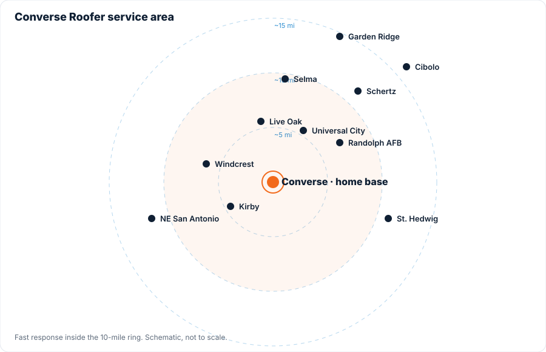

About Converse Roofer
A local storm-restoration roofing company based in Converse, Texas. We handle the inspection, the insurance conversation and the build, and we answer the phone afterward.

Roofers from the neighborhood, not from the storm
Every big hail storm brings a wave of out-of-town companies to Converse. They set up in a hotel off I-10, knock every door in the subdivision, and leave when the claims dry up. When the roof leaks two years later, the number's disconnected.
We started Converse Roofer to be the other option: a company with a Converse address, a local phone number, and a reputation on the same streets we live on. We specialize in hail and wind damage because that's what this part of Bexar County gets, and we've built our whole process around giving homeowners clear documentation and a fair written price, so nobody gets taken advantage of.
📞 Call 956-465-6045What you can expect from us
Photos of everything
Every inspection is documented slope by slope. You get the report whether you hire us or not.
No pressure, no gimmicks
We don't ask you to sign before you've decided how you're paying for the work, and we don't do "free roof" pitches. You pay your deductible, we never touch it.
Insured, in writing
We'll send our general liability certificate before we set foot on your roof. Call the agent on it if you want to verify.
Scope you can read
Shingle brand and line, underlayment, ice-and-water, flashing, ventilation and decking pricing are all spelled out before you sign.
Clean job sites
Tarps over landscaping, magnet sweeps for nails, and a walk-around with you before we leave.
We answer the phone
Same number before, during and after the job. Workmanship warranty backed by a company that's still here.


Everything a storm can throw at a roof
- Free hail and wind damage inspections with photo reports
- Written repair estimates and dated photo reports you can share with your insurance company
- Full roof replacement: architectural, Class 4 impact-resistant, and metal
- Roof repairs, leak tracing and emergency tarping
- Decking replacement, ridge and soffit ventilation
- Seamless gutters, downspouts and gutter guards
- Skylight, vent and flashing replacement

Converse and the northeast side of San Antonio
We stay close so we can be on your roof fast and back on it later if you ever need us.

What neighbors say
Placeholder slots. Paste in real Google reviews (with the reviewer's permission) or embed your Google Business Profile reviews widget here before launch.
[Google review text goes here]
[Google review text goes here]
[Google review text goes here]